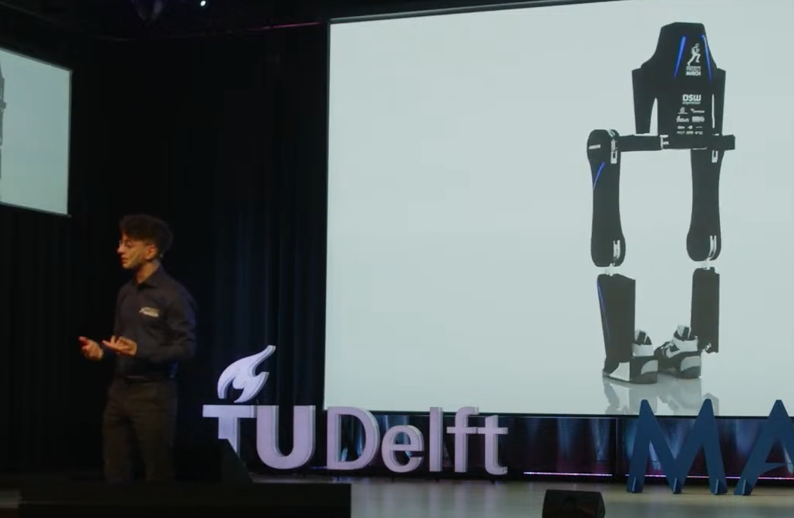

- I was born in the Netherlands on the 8th of December, 2000. In 2021, I completed my
Bachelor's degree in Mechanical Engineering at TU Delft. Afterwards, I started the Master's programme Robotics.
- After completing my coursework, I took a year off to dedicate all my time to being a software and robotics engineer for Project MARCH,
a student-led research project where we designed, built and programmed an fully motorized lower-body exoskeleton for a paraplegic pilot.
- I'm currently finishing up my thesis on Eigenmanifold control for underactuated robotic systems.
